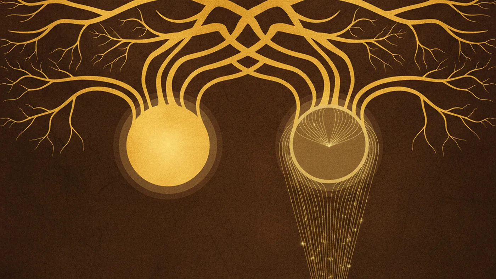
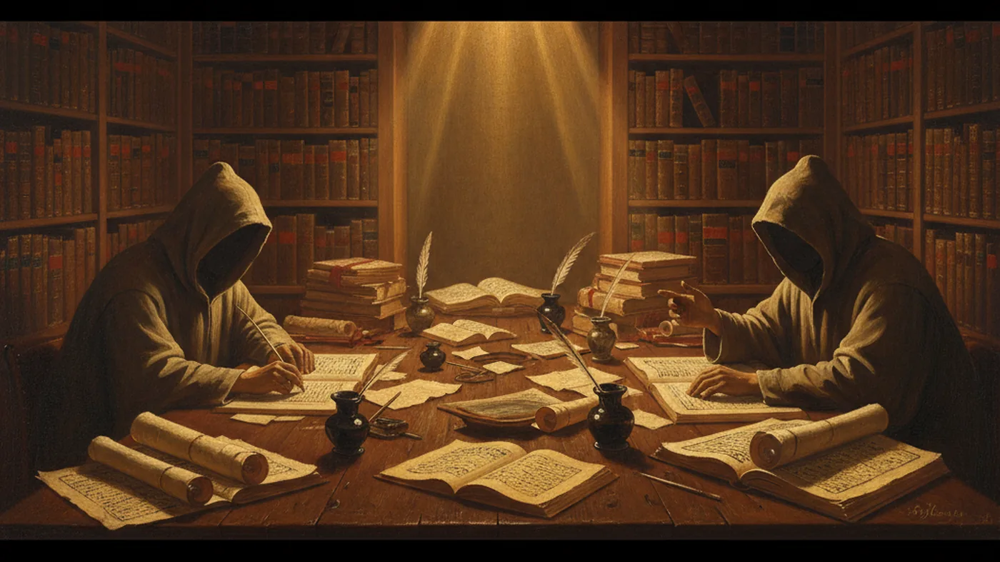

Saya membuka dua kitab sekaligus tadi pagi. Di layar kiri: Mughni al-Muhtaj karya al-Shirbini. Di layar kanan: Fiqh al-Sunnah karya Sayyid Sabiq. Keduanya di Syamilah. Keduanya tentang satu hal: qunut Subuh.
Saya tidak berniat mencari jawaban. Saya hanya ingin melihat: kenapa satu amalan yang dilakukan jutaan orang Indonesia setiap hari bisa menjadi medan perang teologis yang tak kunjung selesai?
Lalu saya menemukan satu nama yang muncul di semua rantai: Abu Ja'far al-Razi. Dan di situlah semuanya mulai jelas.
Satu Sahabat, Dua Hadits yang Bertentangan
Semua berawal dari Anas ibn Malik. Sahabat yang melayani Nabi selama sepuluh tahun. Saksi mata yang hidup hingga usia 93 tahun (w. 93 H) — cukup lama untuk meriwayatkan ribuan hadits dan melihat Islam menyebar ke seluruh penjuru.
Dari Anas, umat Islam mewarisi dua hadits yang tampaknya bertentangan:
Hadits pertama — diriwayatkan oleh 'Asim al-Ahwal, perawi sahih yang haditsnya masuk dalam Shahihayn:
"Rasulullah melakukan qunut selama sebulan — mendoakan kebinasaan atas beberapa suku Arab — lalu meninggalkannya."
Hadits kedua — diriwayatkan oleh al-Rabi' ibn Anas, melalui Abu Ja'far al-Razi:
"Rasulullah tidak pernah berhenti melakukan qunut di Subuh hingga beliau meninggalkan dunia."
Satu sahabat. Dua hadits. Dua kesimpulan yang berlawanan.

Di Mana Letak Masalahnya: Analisis ICMA
Metode isnad-cum-matn analysis (ICMA) yang dikembangkan oleh Harald Motzki memungkinkan kita melihat struktur transmisi hadits secara visual. Ketika saya menerapkannya pada hadits qunut Subuh, inilah yang muncul.
Hadits "qunut nazilah lalu berhenti" memiliki Common Link yang kuat: 'Asim al-Ahwal (w. ~140 H). Ia adalah perawi sahih — haditsnya diriwayatkan oleh al-Bukhari dan Muslim. Jalur transmisinya bercabang ke banyak kolektor terpercaya. Ini hadits yang tidak diperselisihkan.
Hadits "qunut terus-menerus hingga wafat" memiliki struktur yang sangat berbeda. Seluruh rantainya — enam jalur atau lebih — bertemu pada satu orang: Abu Ja'far al-Razi (w. ~160 H). Tidak ada jalur independen lain. Tidak ada syahid dari sahabat lain yang benar-benar sahih. Seluruh klaim ini bergantung pada satu perawi tunggal.
Dan siapakah Abu Ja'far al-Razi?
Ibn Hajar al-Asqalani, dalam Taqrib al-Tahdhib, menilainya: "صدوق سيء الحفظ" — jujur, tapi buruk hafalannya. Ia bukan pendusta. Tapi ingatannya tidak bisa diandalkan sepenuhnya. Dalam hierarki kritikus hadits, ia berada di level yang membuat haditsnya bisa diterima jika ada penguat. Tapi dalam kasus ini, tidak ada penguat independen.
Bahkan al-Nawawi sendiri — pembela utama qunut Subuh — mengakui kelemahan ini. Dalam al-Majmu', ia mengutip penilaian Ibn Hajar tentang Abu Ja'far apa adanya, tanpa menyembunyikannya. Ia tidak membangun argumennya di atas klaim bahwa Abu Ja'far adalah perawi sempurna. Ia membangunnya di atas hal lain.
Enam Rantai, Empat Varian Matan
Analisis matan menunjukkan bahwa hadits "qunut terus-menerus" muncul dalam empat varian redaksi yang menyebar dari Abu Ja'far ke tiga wilayah: Yaman (via Abd al-Razzaq), Baghdad (via Ahmad ibn Hanbal), Mesir (via al-Tahawi), dan Kufah (via Yahya ibn Abi Bukayr).
Inti matannya identik di semua jalur: "yaqnutu hatta faaraqa al-dunya/maata" — melakukan qunut hingga meninggalkan dunia. Varian hanya pada kata pembuka: ma zala, lam yazal, atau qanata. Ini menunjukkan teks sudah stabil di level Abu Ja'far — ia bukan fabrikasi kemudian.
Tapi ada satu varian yang mencolok. Hanya di jalur Kufah (Yahya ibn Abi Bukayr) muncul tambahan: "dan Abu Bakr sampai mati, dan Umar sampai mati." Tambahan ini tidak ditemukan di jalur Yaman, Baghdad, atau Mesir. Kemungkinan besar ini adalah interpolasi di level Partial Common Link — seseorang di Kufah menambahkan nama dua khalifah pertama untuk memperkuat argumen. Bukan bagian dari teks asli yang diriwayatkan Abu Ja'far.

Dua Argumen yang Sama-sama Masuk Akal
Argumen Para Pengkritik
Dimulai dari generasi sahabat. Tariq ibn Ashyam al-Ashja'i — seorang sahabat yang salat di belakang Nabi dan empat khalifah di Kufah selama lima tahun. Ketika anaknya bertanya apakah mereka melakukan qunut di Subuh, Tariq menjawab: "Tidak. Itu perkara baru (muhdath)." (HR Ahmad, al-Tirmidhi, al-Nasa'i — dinilai sahih oleh Ibn Hibban dan al-Albani)
Rantai kritik ini berlanjut: Ibn Hazm (w. 456 H) dalam al-Muhalla, Ibn Taymiyyah (w. 728 H) dalam Majmu' al-Fatawa, Ibn al-Qayyim (w. 751 H) dalam Zad al-Ma'ad, al-Shawkani (w. 1250 H) dalam Nayl al-Awtar, hingga generasi kontemporer: al-Albani, Ibn Baz, Ibn Uthaymeen, dan Sayyid Sabiq.
Argumen mereka sederhana: hadits tentang qunut terus-menerus bergantung pada satu perawi yang diperselisihkan. Sementara itu, hadits tentang qunut nazilah lalu berhenti diriwayatkan oleh perawi sahih dalam Shahihayn. Ketika ada pertentangan, hadits yang lebih kuat harus dimenangkan.
Argumen Para Pembela
Imam al-Shafi'i (w. 204 H) meletakkan fondasinya dalam al-Umm: qunut Subuh adalah sunnah berdasarkan hadits Anas. Praktik ini, menurutnya, juga dilakukan oleh para khalifah.
Tapi pembelaan paling sistematis datang dari Imam al-Nawawi (w. 676 H). Dalam al-Majmu' Syarh al-Muhadhdhab, ia membangun sistem argumentasi bertingkat:
Pertama — otentikasi. Ia menegaskan bahwa hadits Anas tentang qunut terus-menerus adalah sahih. Ia mengutip al-Balkhi, al-Hakim, al-Bayhaqi, dan al-Daraqutni sebagai pihak yang mensahihkannya. Hadits ini diriwayatkan melalui banyak jalur — meskipun semuanya bertemu di Abu Ja'far, jalur-jalur itu saling menguatkan.
Kedua — kaidah ushul: al-muthbit muqaddam 'ala al-nafi. Yang mengafirmasi didahulukan atas yang menegasi. Orang yang mengatakan "terjadi" memiliki tambahan ilmu — ia mungkin melihat apa yang tidak dilihat oleh yang mengatakan "tidak terjadi." Tariq ibn Ashyam tidak melihat qunut di Kufah. Tapi Anas, Abu Hurayra, Ibn Abbas, dan al-Bara' ibn Azib melihatnya di Madinah.
Ketiga — pembedaan dua jenis qunut. Qunut yang dilakukan Nabi selama sebulan lalu ditinggalkan adalah qunut nazilah — mendoakan kebinasaan atas musuh. Sementara qunut Subuh adalah ibadah terpisah yang terus dilakukan hingga wafat. Dua riwayat dari Anas yang tampaknya bertentangan sebenarnya merujuk pada dua praktik yang berbeda.
Keempat — praktik yang hidup. Qunut Subuh diamalkan oleh generasi Salaf di Madinah dan Makkah. Ini adalah argumen tambahan di luar hadits: 'amal — praktik umat yang bersambung.
Enam Argumen, Enam Jawaban
🟤 Argumen Kritikus
Tariq ibn Ashyam: Nabi TIDAK qunut di Kufah
🟡 Jawaban Syafi'iyyah
Afirmasi didahulukan atas negasi. Yang melihat lebih banyak.
🟤 Argumen Kritikus
Anas: Qunut cuma sebulan lalu berhenti
🟡 Jawaban Syafi'iyyah
Itu qunut NAZILAH. Untuk Subuh: "tidak pernah berhenti."
🟤 Argumen Kritikus
Hadits qunut Subuh dhaif
🟡 Jawaban Syafi'iyyah
Al-Nawawi, al-Bayhaqi, al-Hakim mensahihkannya.
🟤 Argumen Kritikus
Hanya Syafi'iyyah yang melakukannya
🟡 Jawaban Syafi'iyyah
Praktik Salaf Madinah, Makkah. Malikiyyah juga mengakuinya.
🟤 Argumen Kritikus
Ibn Mas'ud, Ibn Abbas tidak qunut
🟡 Jawaban Syafi'iyyah
Mereka mungkin tidak melihatnya. Riwayat dari mereka lemah.
🟤 Argumen Kritikus
Ini bid'ah
🟡 Jawaban Syafi'iyyah
Khilafiyah ijtihadiyah — bukan mengada-ada tanpa dasar.
Dan keduanya tidak akan pernah sepakat — karena titik awal mereka berbeda. Yang satu bertanya: "Apakah sanadnya cukup kuat untuk mengikat?" Yang lain bertanya: "Apakah umat sudah cukup lama mengamalkannya untuk dianggap sebagai sunnah yang hidup?"
Dua pertanyaan. Satu Subuh. Dan jutaan Muslim di Indonesia yang bangun setiap pagi, mengangkat tangan, membaca Allahummahdini fi man hadayt... — entah karena mengikuti al-Nawawi, atau karena menghormati jamaah yang sudah terbiasa, atau karena tidak ingin masjid terpecah hanya karena perbedaan gerakan tangan.
Mungkin itu hikmah yang paling dalam dari semuanya. Bahwa di balik semua analisis isnad, di balik semua perbandingan matan, di balik semua debat tentang Common Link dan Partial Common Link — pada akhirnya, fikih bukan hanya tentang benar dan salah. Ia juga tentang bagaimana kita hidup bersama dalam ketidaksepakatan.
— ALIM